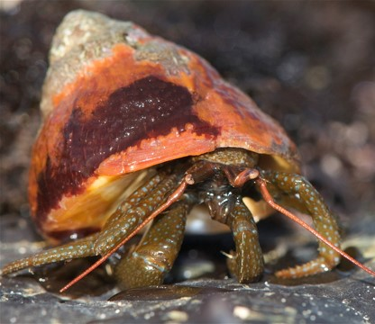

People think hermit crabs are cute, but I can't think of anything creepier. Some dead thing's shell, with legs poking out of it. Scuttling. Feeding on corpses. Living in a borrowed skin of death.
― Nick Lake, Whisper to Me
The Blueband Hermit Crab is a marine organism that is primarily found in the intertidal region of the west coast of North America and has a range from British Columbia, Canada to Baja, California. These hermit crabs live the entirety of their lives in the rocky intertidal region of the ocean and are scavengers of carrion, which is to say they eat decaying flesh of other animals which have died due to predation or intertidal wave activity. This species of hermit crab plays an important role in energy recycling in these intertidal ecosystems as they consume the flesh of organism which have perished.
The Blueband Hermit Crab belongs to the order Decapoda which translates to "ten-footed", and as can be expected, has ten legs which emanate from the most anterior body segment, the cephalothorax. The claws of a hermit crab are a highly modified first pair of legs called chelipeds. Hermit crabs of the family Paguridae are 'right-handed' meaning their right claw is larger than their left. The second and third pairs of legs are the walking legs which extend out of the shell the hermit crab carries on its abdomen. The final two pairs of legs are modified, reduced legs which hold the gastropod shell in place over the abdomen as the hermit crab moves. Blueband Hermit Crabs earn their name because they have a light blue pigmentation near the most distal joint of their walking appendages. They have red antennae and the remainder of their exoskeleton is a darker green color. The carapace, the top of the cephothorax, of a Blueband Hermit Crab is up to 4 cm long. The Blueband Hermit Crab is a relatively small organism and could fit in the palm of your hand.
• Link to Wikipedia Page